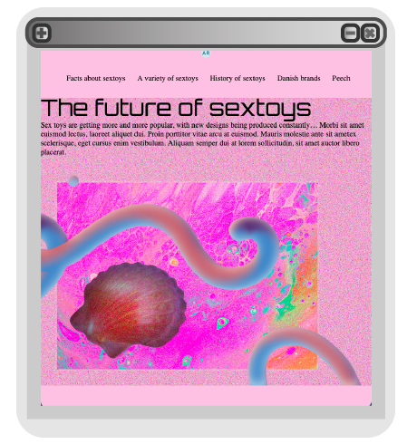

WEB
Responsiv site
Modern futuristic style
Opgaven var at lave en responsiv site, og designe ud fra en bestmemt stil.
Den stil jeg arbejdede med var Modern futurism.


Den stil jeg arbejdede med var Modern futurism.